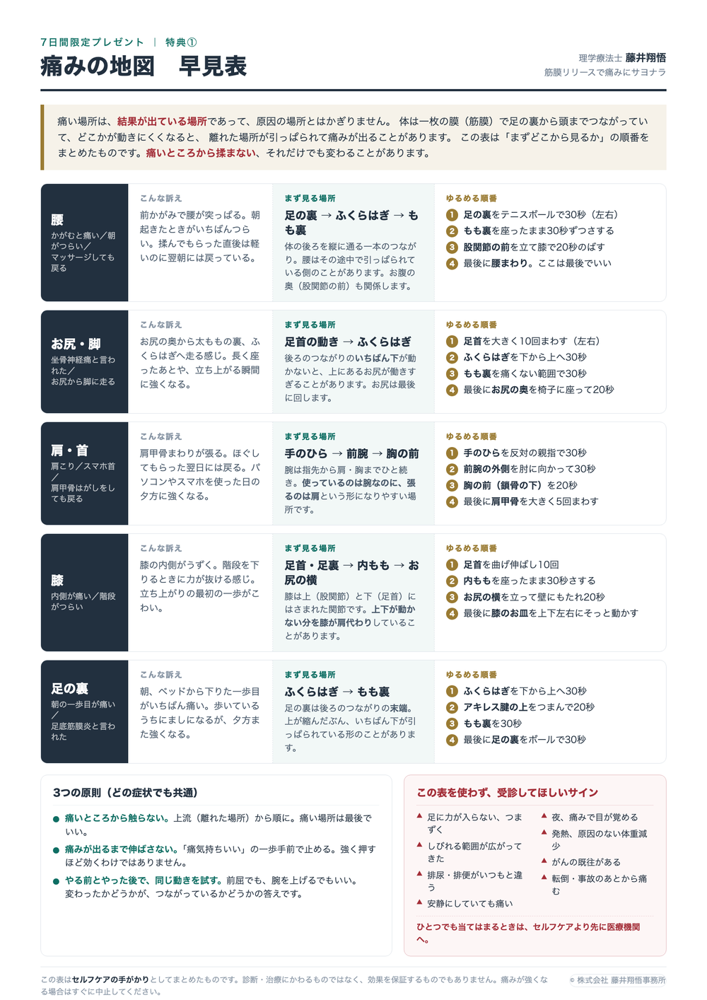

腰／お尻・脚／肩・首／膝／足の裏の5つについて、「その症状で、まずどこから見るか」を1枚にまとめました。 印刷して、見えるところに貼っておけるサイズにしてあります。

早見表をダウンロード（PDF）A4・1ページ / 約0.9MB明日から7日間、1日1通だけメールが届きます。1日ひとつ、1分でできることだけをお送りします。
読むだけで終わらないように、その日やることを1つに絞ってあります。
届かないときは迷惑メールフォルダをご確認ください。いつでも1クリックで解除できます。
早見表の背景にある考え方を、私自身が短く話している動画を3本選びました。 1本ずつ、見たあとに試す「動きテスト」をつけています。見て終わりにせず、必ず体で確かめてみてください。